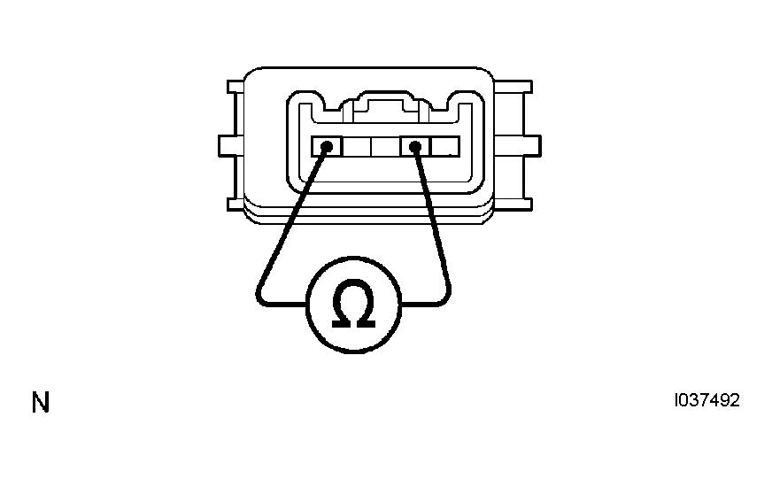
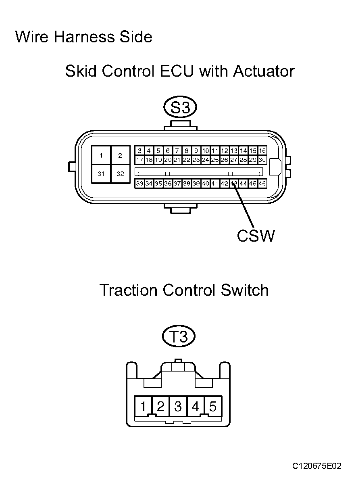
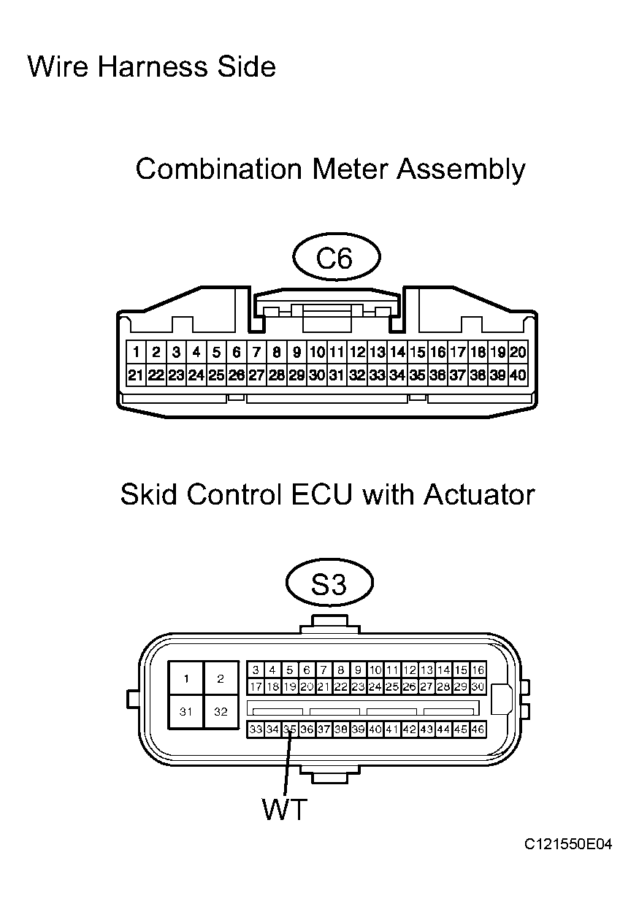

Inspection Procedure
- CHOOSE DIAGNOSIS METHOD
- Choose the diagnosis method.
Method
METHOD REFERENCEMethod Proceed to Using intelligent tester A Not using intelligent tester B
B: Go to step 3
A: Go to next step
- Choose the diagnosis method.
- PERFORM ACTIVE TEST BY INTELLIGENT TESTER (TRAC OFF INDICATOR LIGHT)
- Select the ACTIVE TEST, generate a control command, and then check that the TRAC OFF indicator light illuminates.
Skid control ECU with actuator
MEASUREMENT ITEM DIAGNOSTIC CHARTItem Measurement Item / Range (Display) Diagnostic Note VSC / TRC OFF IND Turns VSC / TRAC OFF indicator light ON / OFF Observe combination meter OK: VSC / TRAC OFF indicator light illuminates.
NG: Go to step 5
OK: Go to Next Step
- Select the ACTIVE TEST, generate a control command, and then check that the TRAC OFF indicator light illuminates.
- INSPECT TRACTION CONTROL SWITCH
- Remove the switch.
- Measure the resistance of the switch.
Standard resistance
TESTER CONNECTION SPECIFIED CONDITIONTester Connection Switch Condition Specified Condition 2 - 5 Pushed (ON) Below 1 Ω Not pushed (OFF) 10 kΩ or higher
NG: REPLACE TRACTION CONTROL SWITCH

Courtesy of © TOYOTA, LICENSE AGREEMENT TMS1002OK: Go to Next Step
- CHECK WIRE HARNESS (TRACTION CONTROL SWITCH - SKID CONTROL ECU AND BODY GROUND)
- Disconnect the S3 ECU connector.
- Disconnect the T3 switch connector.
- Measure the resistance of the wire harness side connectors.
Standard resistance
TESTER CONNECTION SPECIFIED CONDITIONTester Connection Specified Condition T3-5 - S3-43 (CSW) Below 1 Ω T3-2 - Body ground HINT:
When replacing the skid control ECU with actuator, perform the zero point calibration (see CALIBRATION ).
NG: REPAIR OR REPLACE HARNESS AND CONNECTOR

Courtesy of © TOYOTA, LICENSE AGREEMENT TMS1002OK: REPLACE BRAKE ACTUATOR ASSEMBLY
- CHECK WIRE HARNESS (COMBINATION METER - SKID CONTROL ECU)
- Disconnect the C6 meter connector.
- Disconnect the S3 ECU connector.
- Measure the resistance of the wire harness side connectors.
Standard resistance
TESTER CONNECTION SPECIFIED CONDITIONTester Connection Specified Condition C6-19 - S3-35 (WT) Below 1 Ω
NG: REPAIR OR REPLACE HARNESS AND CONNECTOR

Courtesy of © TOYOTA, LICENSE AGREEMENT TMS1002OK: REPLACE COMBINATION METER ASSEMBLY